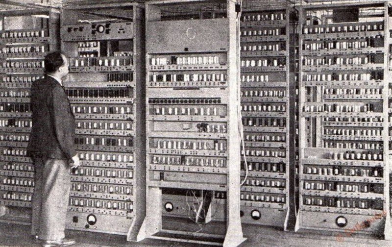
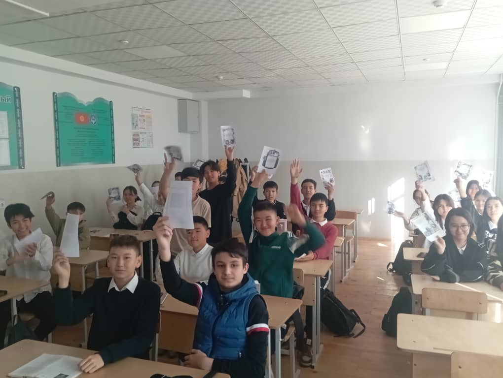
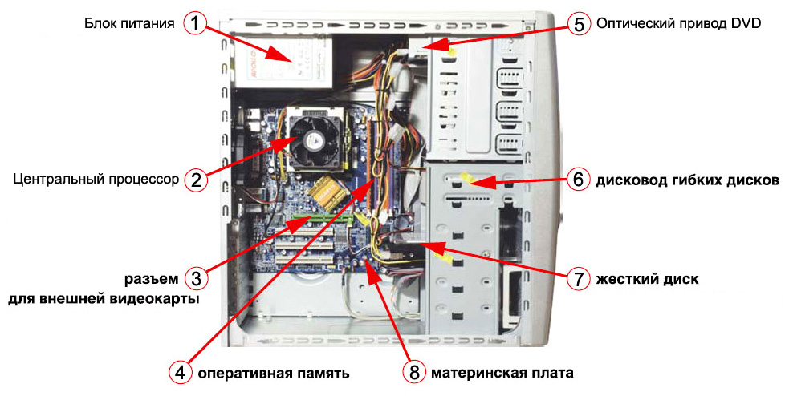
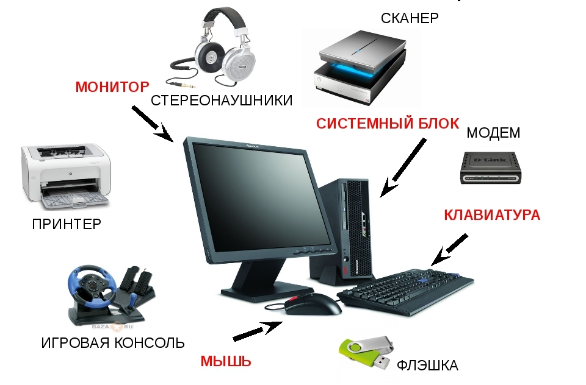
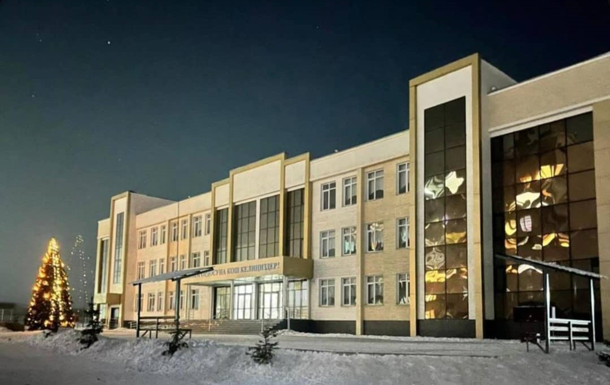
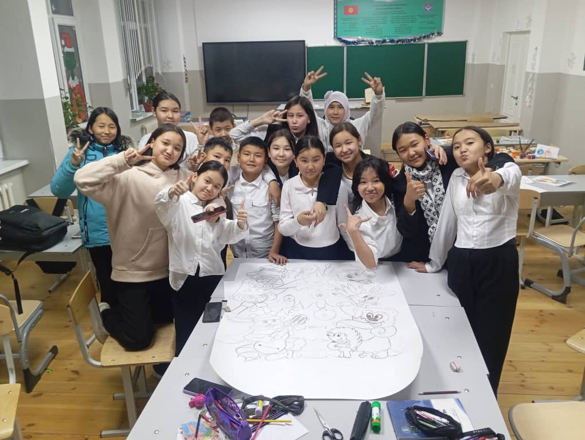
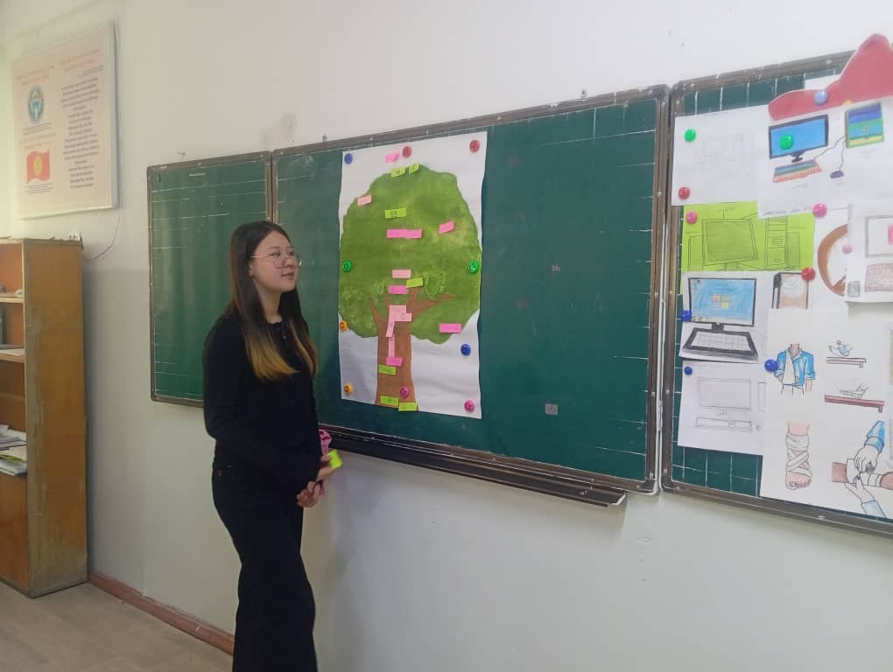
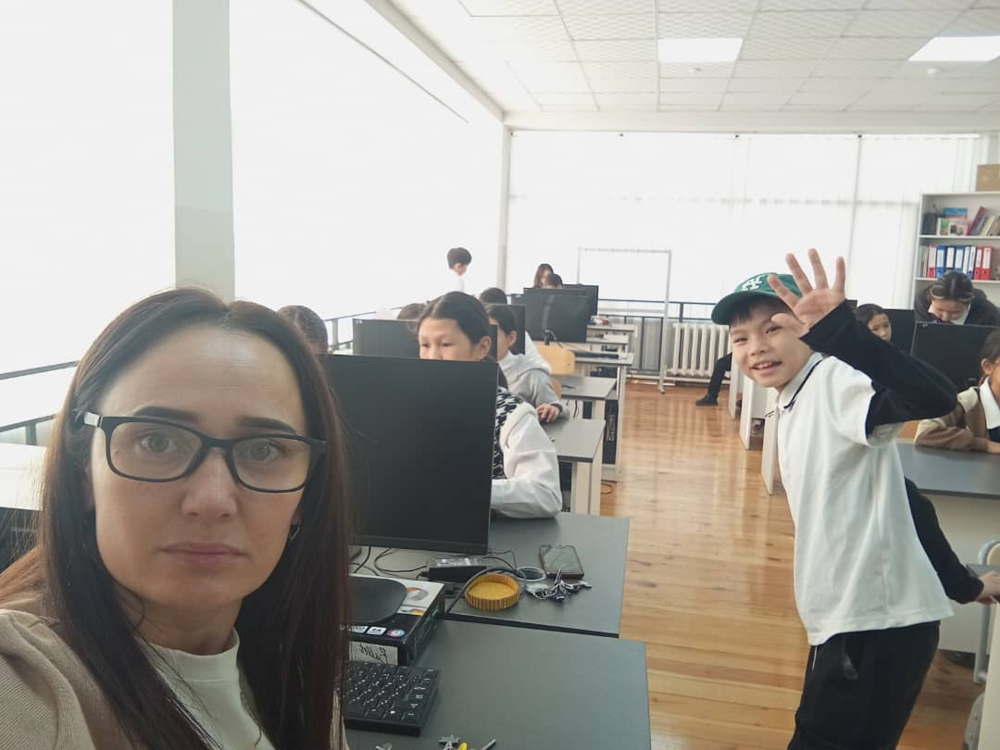

Что такое информатика?
Информатика — это наука, изучающая методы хранения, обработки и передачи информации. А так же о методах и процессах сбора, хранения, обработки, передачи, анализа и оценки информации с применением компьютерных технологий, обеспечивающих возможность её использования для принятия решений.
История информатики
Когда и как появился компьютер? Первую реально работающую программируемую вычислительную машину сконструировал немецкий инженер Конрад Цузе в 1941 году. При помощи вычислений компьютер способен обрабатывать информацию по определённому алгоритму. Решение любой задачи для компьютера является последовательностью вычислений. Снизу вы можете увидеть самый первый компьютер в мире.
 Системный блок
Основные компоненты системного блока – это материнская плата, процессор, жесткий диск, видеоадаптер, сетевые и звуковые карты, оперативная память, система охлаждения, блок питания.
  Какие бывают порты компьютера?
- (No) (Название) (Описание)
- (a) --- Разъем PS/2 Верхний порт (зеленый) для подключения мыши PS/2 и нижний порт (фиолетовый) для подключения клавиатуры PS/2
- (b) --- Разъем VGA Разъем для подключения монитора
- (c) --- DVI-D Port Разъем для подключения монитора
- (d) --- HDMI Порт для подключения монитора
- (e) --- Разъем USB Порты USB 2.0 для подключения периферийных устройств
- (f) --- Разъем USB Порты USB 3.2 для подключения периферийных устройств z
- (g) --- LAN Порт RJ-45 10 / 100 /1000 Мбит/с
- (h) --- Линейный вход/выход (синий) Используется для подключения линейных устройств
- (i) --- Линейный выход (зеленый) Линейный выход
- (j) --- Вход для микрофона Используется для подключения микрофона
- (k) --- Слоты расширения Иcпользуются для установки плат расширения
- (l) --- Переключатель питания Переключатель питания
- (m) --- Разъем питания Разъем для подключения питания AC 100V ∽ 240 V
Школа №73
Наша школа топ-1
  